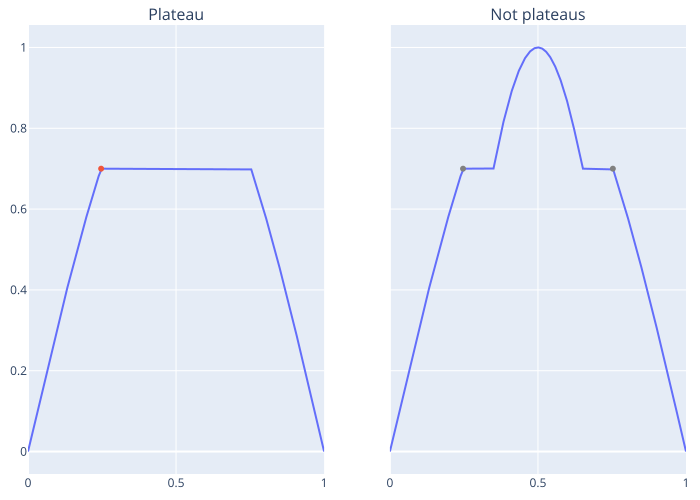
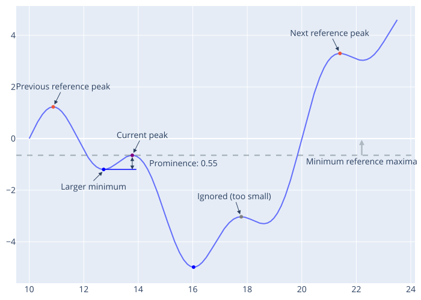
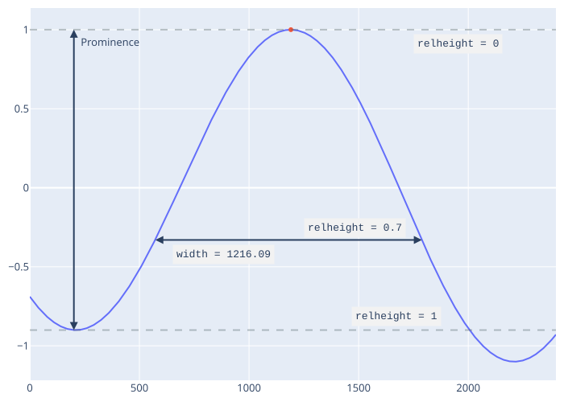

Common terminology
Peak (a.k.a. [local] extrema, maxima, minima, etc.)
An element x[i] which is more extreme than its adjacent elements, or more extreme than all elements in the window x[i-w:i+w] where w is a positive integer
"Peak" may specifically refer to the index (i.e. location) of the peak, which is most broadly relevant when speaking of a specific peak
Plateau
A "flat" peak, where the value of the extrema occurs multiple times consecutively, but surrounding elements are less than the extremum. The first occurence of the extrema is considered the peak location. Uncommon for floating-point data.

Peak prominence
For maxima, peak prominence is the absolute difference in height between a maxima and the larger of the two minimums in the adjacent reference ranges. Reference ranges are the range between the current maxima and adjacent (i.e. previous and next) reference maxima, which must be at least as large as the current maxima. The same is true of minima with opposite extrema/extremum (e.g. minima for maxima, and maximum for minimum, etc.).

Peak width
Peak width is measured as the distance (in units of indices) between the intersection of a horizontal reference line with the signal on either side of a peak, where the height of the reference line is offset from the peak height by a proportion of the peak prominence (keyword argument relheight for the peakwidths functions).

"Strict"-ness
The default behavior of peak finding and related functions (e.g. peakproms, etc.) is to only return results that are exactly correct, and to return nothing (i.e. ignore a potential peak), NaN, or missing, as appropriate for a given function. This behavior is controlled by the strict keyword argument (true by default). Setting the strict keyword to false allows these functions to relax some data requirements. When strict == false, functions will make optimistic assumptions in an attempt to return useful information (e.g. not NaN or missing) when data violates default requirements. This can produce results that are not technically correct, but sometimes this is desired/needed.
strict-ness should only affect new peaks/characteristics (i.e. only peaks detected with strict == false). Any observed behavior otherwise (i.e. non-strict peak characteristics are altered) is a bug and an issue should be opened.
maxima/minimafinding functions (e.g.findmaxima, etc.) assume that any missing data in a window is consistent with a peak. For example:- The maximal/minimal value in an incomplete window (e.g. an index
iwithinwelements of the array beginning or end,i-w < firstindex(x)ori+w > lastindex(x)) is assumed to be a peak (i.e. if the array continued, the data would be less/more the current maximal/minimal value). This allows the first or last elements of an array to be considered peaks. - The maximal/minimal value in a window containing
missingorNaNelements is assumed to be a peak (i.e. themissingorNaNvalues would be less/more than the current value if they existed or were real numbers)
- The maximal/minimal value in an incomplete window (e.g. an index
peakpromsuses the larger present (i.e. notNaNormissing) value of the minimum values in each reference range (see prominence definition)peakwidthslinearly interpolates across a gap at the width reference level